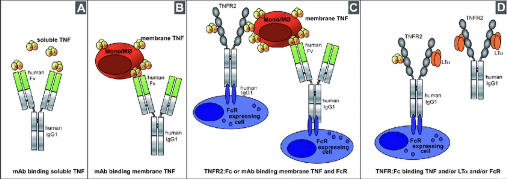

재생 의학 관점에서의 류마티스 관절염에 대한 자가면역치료 적용
탐구 주제: 류마티스 관절염의 자가면역치료
탐구 대상: 류마티스 관절염 치료법
재생 의학은 사람의 신체 기능을 정상적으로 회복시키기 위해 손상된 세포, 조직, 장기를 대체하거나 재생시키는 첨단 의료 분야이다. 이는 단순히 질병의 증상을 완화하는 전통적인 치료법에서 벗어나 생체 구조를 근본적으로 복구하여 질환을 완화하거나 완치하는 것을 목표로 한다.
주요 핵심 기술로는 자가 복제 능력을 지닌 줄기세포 치료, 생분해성 재료를 활용해 조직의 성장을 돕는 조직 공학, 그리고 유전적 결함을 수정하는 유전자 치료 등이 있다.
최근에는 3D 바이오 프린팅 기술과 접목되어 인공 장기를 제작하는 수준까지 발전하고 있으며 과거에는 치료가 불가능했던 난치성 질환이나 만성 퇴행성 질환을 해결할 수 있는 미래 의학의 핵심으로 평가받고 있다.
자가면역질환은 외부 항원으로부터 몸을 보호해야 할 면역 체계가 이상을 일으켜 자신의 정상적인 세포나 조직을 외부 침입자로 오인해 공격하는 질환이다. 면역 관용 시스템이 무너지면서 발생하며 공격 부위에 따라 전신 혹은 특정 장기에 만성적인 염증과 손상을 초래한다.
류마티스 관절염은 자가면역 반응으로 인해 관절을 둘러싸고 있는 활막에 지속적인 염증이 생기는 만성 염증성 질환이다. 주로 손가락, 발가락 등 작은 관절에서 시작되며 염증이 심해지면 관절의 연골과 뼈가 파괴되어 결국 관절의 변형과 기능 상실을 유발한다.
과거의 치료는 주로 염증을 억제하고 통증을 줄이는 증상 완화에 초점이 맞춰져 있었다. - 비스테로이드성 항염제(NSAIDs): 통증과 부기를 일시적으로 가라앉히기 위해 사용되었다. - 스테로이드(Corticosteroids): 강력한 항염 효과가 있으나 장기 복용 시 골다공증이나 고혈압 등 심각한 부작용을 동반하는 한계가 있었다. - 전통적 항류마티스 약제(DMARDs): 면역을 전반적으로 억제하여 질병의 진행을 늦추려 했으나 약효가 나타나기까지 시간이 오래 걸리고 간 독성 등의 위험이 있었다.
최근에는 단순히 면역을 억제하는 것을 넘어 손상된 조직을 복구하거나 면역 체계를 재교육하는 재생의학적 접근이 주목받고 있다. - 줄기세포 치료: 성체 줄기세포(주로 중간엽줄기세포)를 주입하여 면역 반응을 조절하고 파괴된 연골 조직의 재생을 유도한다. 이는 면역 세포의 과도한 활성을 잠재우는 강력한 면역 조절 효과가 있다. - 유전자 치료: 염증을 유발하는 특정 단백질(TNF-α 등)을 차단하는 유전자를 체내에 전달하여 지속적으로 항염증 물질이 생성되도록 유도하는 방식이다. - 내성 유도 요법: 면역 체계가 자신의 조직을 다시 정상으로 인식하도록 훈련시키는 치료법으로 질환의 근본적인 원인을 해결하려는 시도가 이어지고 있다.
류마티스 관절염의 기존 치료는 증상 완화에 치중했으나 현대 의학은 면역 반응을 직접 조절하여 관해(증상 소실) 상태를 목표로 하는 면역 치료 단계에 진입하였다. 완벽한 완치는 어려울 수 있지만 특정 사이토카인을 표적으로 삼아 질병의 진행을 근본적으로 억제하는 것이 핵심이다
TNF-α는 관절 염증과 연골 파괴를 주도하는 핵심 사이토카인으로 이를 항체로 중화하여 염증 반응을 차단하는 것이 치료의 주된 원리이다. 에타너셉트(엔브렐): 대표적인 TNF-α 억제제로 피하주사 방식으로 투여하며 약효 발현이 빠르고 소아 환자에게도 적용 가능할 만큼 범용성이 넓다. 장단점: 면역 시스템을 자극하는 면역원성이 낮아 항약물항체 형성률이 적지만 타 약제에 비해 투여 빈도가 높고 시간이 지남에 따라 효과가 감소하는 약물반응 소실이 나타날 수 있다.

TNF-α 억제제는 체내에서 염증을 유발하는 물질을 직접 차단하고 면역 세포와 협력하여 작용한다. 중화 작용: 혈액 속에 떠다니는 용해성 TNF와 세포 표면의 막 결합 TNF 모두에 결합하여 그 활성을 무력화한다. 면역 세포 협력: 항체의 끝부분을 인식하는 Fc 수용체(Fc-R)를 통해 면역 세포와 협력하며 TNF-α를 생성하는 세포 자체에도 영향을 주어 이를 효과적으로 제거한다. 광범위한 차단(TNFR 기반 시약): 에타너셉트와 같은 약물은 실제 TNF 수용체를 모방하여 제작되었으며 TNF-α뿐만 아니라 유사한 염증 물질인 림포톡신 알파(LTa)까지 함께 결합하여 중화시킨다. 결과적으로 면역 치료제는 염증 유도 물질을 정밀하게 타격함으로써 관절 구조의 손상을 방지하고 질병 활성도를 효과적으로 낮추는 역할을 수행한다.
---재생 의학의 한 축인 면역 치료는 류마티스 관절염 치료의 패러다임을 단순 증상 완화에서 질병 활성도 조절 및 관해 유도로 전환시켰다. 특히 TNF-α 억제제인 에타너셉트 등은 염증 유발 사이토카인을 정밀하게 표격하여 관절 파괴를 실질적으로 억제하는 성과를 보여준다. 비록 완벽한 완치에는 한계가 있고 약물반응 소실 등의 과제가 남아있으나 면역 체계를 직접 제어하는 이러한 공학적 접근은 난치성 자가면역질환을 극복하는 핵심적인 역할을 수행하고 있다.